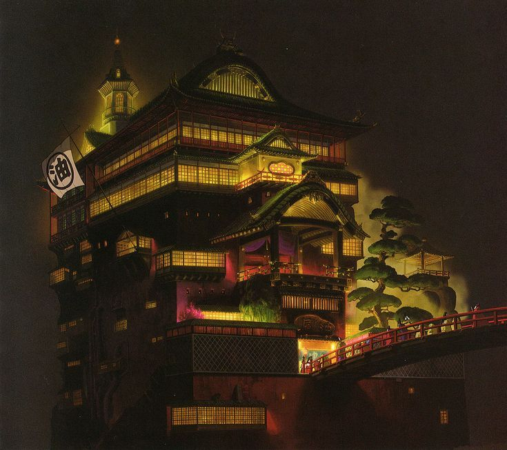
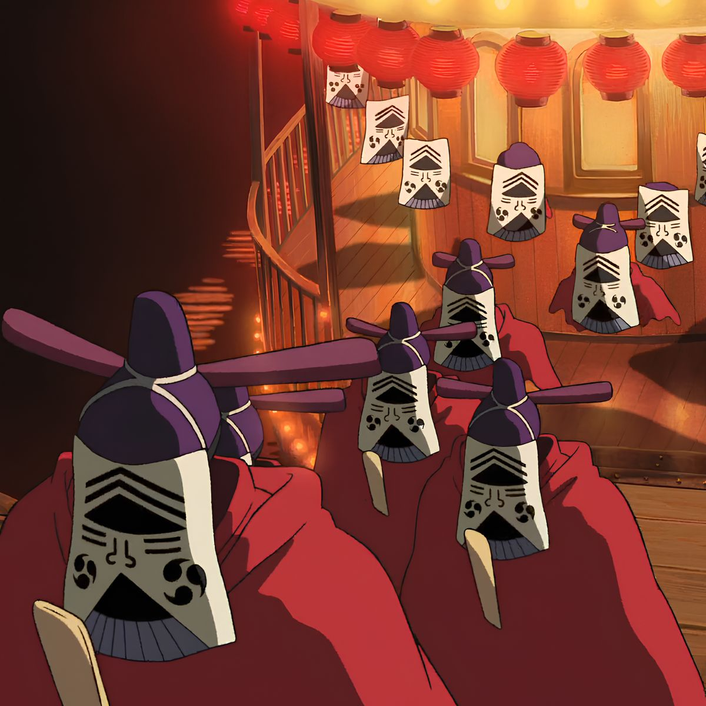
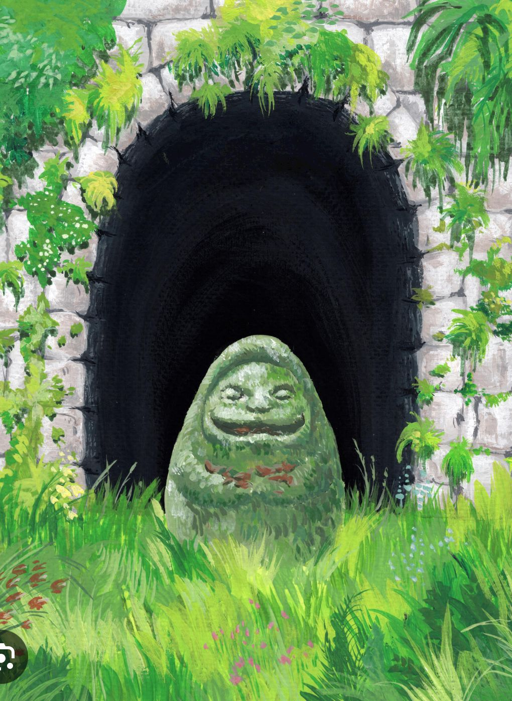

CHAPTER I
The Heart of Shintoism
At the core of Spirited Away lies Shinto, Japan's indigenous religion. It asserts that spiritual powers, or Kami, inhabit all aspects of nature.

CHAPTER II
Yaoyorozu no Kami
The phrase "Yaoyorozu no Kami", literally meaning "Eight Million Gods," signifies the infinite number of deities in the world.

CHAPTER III
The Kamikakushi
people mysteriously taken away by spirits or gods. Chihiro’s sudden disappearance into the spirit world reflects this belief, where humans cross into a hidden realm beyond ordinary life.
